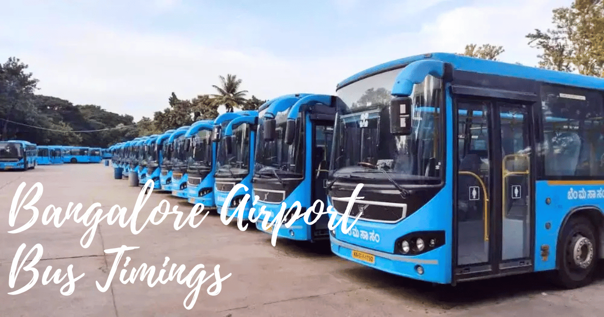

Bangalore’s airport buses, known as Vayu Vajra, provide a convenient connection between Kempegowda International Airport (KIA) and different parts of Bangalore city. Operated by BMTC, these air-conditioned buses run 24/7, covering key areas like Whitefield, Electronic City, and MG Road, making airport travel easy and comfortable.
Journey time to travel to KIA from Bangalore city using Bangalore airport buses is around 1.5 Hours to 2.5 Hours on average depending on traffic.
| Route No | Kempegowda International Airport Bus Route | Places covered by Vayu Vajra Services |
| KIA-4 | KIA-HAL | Hebbala, Mekri Circle, J.C Nagar, Halasur Lake, Indiranagar KFC |
| KIA-4A | KIA-WFTTMC | Hebbala, Mekri Circle, J.C Nagar, Halasur Lake, Indiranagar KFC |
| KIA-5 | KIA-Banashankari | Hebbala,Mekri Circle, MG Road, Shantinagar TTMC, Jayanagar 4th Block, J.p Nagar 6th Phase |
| KIA-5D | KIA-Brigade Meadows Kanakpura Road | Hebbala,Mekri Circle, MG Road, Shantinagar TTMC, Jayanagar 4th Block |
| KIA-6 | KIA-KDG | Hebbala, M.G Road,Marathahalli,White Field. Hope Farm |
| KIA-6A | KIA-Kadugodi Bus Station | Hebbala,Tin Factory, K.R.Puram Rly, Garudachar Palyra, Hoodi Circle, ITPL Hope Farm |
| KIA-7 | KIA – HSR KEB JUNCTION | Guttahalli, Indian Express, Shantinagar TTMC,Check post, Koramangala Water Tank, Jakkasandra |
| KIA-7A | KIA-HSR BDA COMPLEX | Jakkasndra, M.G Road,Shivajinagar Bus station, Mekri Circle Hebbala |
| KIA-8 | KIA-Electronic City | Hebbala, Tin factory, Marthahalli Bridge,Central Silk Board. |
| KIA-8A | KIA-Kuvempunagar | Hebbala, Tin factory, Marthahalli Bridge,Central Silk Board. |
| KIA-8C | KIA-Chandapura | Hebbala, Tin factory, Marthahalli Bridge,Central Silk Board. |
| KIA-8E | KIA-Electronic City Wipro Gate | Bagaluru, Byrathi Bande Tin factory, Marthahalli Bridge, Central Silk board. |
| KIA-8D | KIA-Sarjapur Bus Station | Hebbala, Tin factory, Marthahalli Bridge,Central Silk Board. |
| KIA-9 | KIA-Kempegowda Bus Station | Hebbala, Mekri Circle, Shivananda Circle |
| KIA-9H | KIA-Hebbala | Hunasanamaranahalli, Kogilu Cross, Esteem Mall |
| KIA-10 | KIA-MCTC | Hebbala,Yeshavanthapura,West of Chord Road,Vijaynagar. |
| KIA-14 | KIA-Royal Meenakshi Mall | Hebbal, Mekri Circle, Shantinagar TTMC, Billekahalli |
| KIA-15 | KIA-White Field TTMC(BACK GATE) | Beguru, Singahalli Cross, Budigere, Khaji Sonnenahalli, Kadugodi,Hope Farm,ITPL |
| KIA-15A | KIA-White Field TTMC(BACK GATE) | Beguru, Singahalli Cross, Budigere, Khaji Sonnenahalli, Kadugodi,Varthur Kodi, Kundalahalli,Graphite India |
| KIA-17 | KIA-BEML Layout 5th Stage | Hebbala,BEL Circle, Mathekere, Yeshwanthpura, GoraguntePalya, Summanhalli, Nayandanahalli, Rajarajeshwarinagar |
| KIA-18 | KIA-Madhavara Nice Road (BIEC) | Kogilu Cross, Yelahanka Upanagar, Atturu Layout, M.S Palya, Gangamma Circle, Jalahalli Cross, Nagasandra Metro Station |
Vayu Vajra Bus Routes & Timings
BMTC operates 20 different Vayu Vajra routes, all labeled under the KIA series, ensuring smooth connectivity between Bangalore city and the airport. The journey duration depends on traffic and can range from 1.5 to 2.5 hours.
Each route has a specific schedule, with buses departing at regular intervals. The complete list of bus routes, stops, and timings is available on the BMTC website or app.
Bangalore Airport Bus Timings Schedule:
This is complete information about Bangalore airport bus timings and schedule of buses from each route from Bangalore city to Kempegowda International Airport.
KIAS 4 Bus Timings:
| KIAS 4 – Airport Bus Timings from KIA to HAL |
| 4:00 AM | 4:30 AM | 5:00 AM | 6:00 AM | 6:45 AM | 7:20 AM |
| 8:30 AM | 3:30 PM | 4:00 PM | 4:30 PM | 5:00 PM | 6:00 PM |
| 6:30 PM | 7:00 PM | 7:30 PM | 8:00 PM | 8:30 PM | 9:20 PM |
| 10:25 PM | 11:20 PM | | | | |
| KIAS 4 – Airport Bus Timings from HAL to KIA |
| 3:00 AM | 4:00 AM | 4:50 AM | 5:30 AM | 6:00 AM | 6:30 AM |
| 7:00 AM | 7:30 AM | 8:00 AM | 9:00 AM | 9:50 AM | 10:30 AM |
| 11:30 AM | 5:45 PM | 6:10 PM | 7:00 PM | 7:30 PM | 8:10 PM |
| 9:00 PM | 10:10 PM | 11:10 PM | | | |
KIAS 4A Bus Timings:
| KIAS 4A – Airport Bus Timings from KIA to WFTTMC |
| 1:12 AM | 1:30 AM | 7:00 AM | 8:00 AM | 9:05 AM | 9:30 AM |
| 10:00 AM | 11:00 AM | 12:00 PM | 12:35 PM | 1:30 PM | 2:40 PM |
| KIAS 4A – Airport Bus Timings from WFTTMC to KIA |
| 12:15 PM | 1:00 PM | 1:35 PM | 2:05 PM | 2:30 PM | 3:40 PM |
| 4:10 PM | 4:40 PM | 5:00 PM | 6:20 PM | | |
KIAS 5 Bus Timings:
| KIAS 5 – Airport Bus Timings from KIA to Banashankari |
| 12:50 AM | 1:00 AM | 3:00 AM | 4:00 AM | 6:00 AM | 6:30 AM |
| 7:10 AM | 7:40 AM | 8:10 AM | 8:40 AM | 9:10 AM | 9:45 AM |
| 10:10 AM | 10:40 AM | 11:10 AM | 11:40 AM | 12:00 PM | 12:20 PM |
| 12:40 PM | 1:05 PM | 1:30 PM | 2:30 PM | 3:00 PM | 4:00 PM |
| 4:00 PM | 4:40 PM | 5:00 PM | 5:20 PM | 6:05 PM | 6:35 PM |
| 7:05 PM | 8:00 PM | 8:30 PM | 9:00 PM | 9:20 PM | 9:40 PM |
| 10:10 PM | 10:40 PM | 11:10 PM | 11:40 PM | | |
| KIAS 5 – Airport Bus Timings from Banashankari to KIA |
| 12:05 AM | 1:00 AM | 4:00 AM | 4:30 AM | 5:10 AM | 5:40 AM |
| 6:20 AM | 7:00 AM | 8:00 AM | 8:30 AM | 9:00 AM | 9:30 AM |
| 10:00 AM | 10:40 AM | 11:05 AM | 11:30 AM | 12:00 PM | 12:30 PM |
| 1:00 PM | 1:45 PM | 2:15 PM | 2:45 PM | 3:15 PM | 3:30 PM |
| 3:50 PM | 4:10 PM | 4:30 PM | 4:55 PM | 5:15 PM | 5:35 PM |
| 5:55 PM | 6:15 PM | 6:35 PM | 6:55 PM | 7:15 PM | 7:45 PM |
| 8:05 PM | 8:45 PM | 9:30 PM | 11:10 PM | | |
KIAS 5D Bus Timings:
| KIAS 5D – Airport Bus Timings from KIA to Brigade Meadows Kanakpura Road |
| 2:00 AM | 5:00 AM | 6:15 AM | 6:50 AM | 2:55 PM | 5:45 PM |
| 6:45 PM | 7:30 PM | | | | |
| KIAS 5D – Airport Bus Timings from Brigade Meadows Kanakpura Road to KIA |
| 4:30 AM | 7:30 AM | 9:20 AM | 10:20 AM | 5:40 PM | 8:25 PM |
| 9:20 PM | 10:10 PM | | | | |
KIAS 6 Bus Timings:
| KIAS 6 – Airport Bus Timings from KIA to KDG |
| 1:00 AM | 2:05 AM | 3:00 AM | 6:30 AM | 7:30 AM | 8:45 AM |
| 9:50 AM | 10:30 AM | 11:30 AM | 2:25 PM | 3:10 PM | 4:15 PM |
| 5:30 PM | 6:15 PM | 7:15 PM | 8:45 PM | 10:10 PM | 10:55 PM |
| KIAS 6 – Airport Bus Timings from KDG to KIA |
| 5:00 AM | 6:05 AM | 6:45 AM | 7:50 AM | 8:45 AM | 12:00 PM |
| 4:00 PM | 4:50 PM | 5:30 PM | 6:00 PM | 7:20 PM | 8:30 PM |
| 9:30 PM | 11:00 PM | | | | |
KIAS 6A Bus Timings:
| KIAS 6A – Airport Bus Timings from KIA to Kadugodi Bus Station |
| 5:45 AM | 7:45 AM | 2:00 PM | 2:50 PM | | |
| KIAS 6A – Airport Bus Timings from Kadugodi Bus Station to KIA |
| 3:30 AM | 5:40 AM | 11:00 AM | 12:30 PM | 4:35 PM | 6:30 PM |
KIAS 7 Bus Timings:
| KIAS 7 – Airport Bus Timings from KIA to HSR KEB JUNCTION |
| 12:50 AM | 9:25 AM | 12:50 PM | 3:00 PM | 7:10 PM | 11:50 PM |
| KIAS 7 – Airport Bus Timings from HSR KEB JUNCTION to KIA |
| 6:15 AM | 8:20 AM | 11:30 AM | 4:30 PM | 6:20 PM | 9:30 PM |
KIAS 7A Bus Timings:
| KIAS 7A – Airport Bus Timings from KIA to HSR BDA COMPLEX |
| 12:15 AM | 1:00 AM | 2:00 AM | 3:00 AM | 5:00 AM | 6:00 AM |
| 6:50 AM | 7:30 AM | 8:10 AM | 8:40 AM | 9:10 AM | 9:40 AM |
| 10:10 AM | 10:30 AM | 10:50 AM | 11:10 AM | 11:50 AM | 12:30 PM |
| 1:10 PM | 1:50 PM | 2:30 PM | 3:10 PM | 3:30 PM | 4:00 PM |
| 4:40 PM | 5:20 PM | 6:00 PM | 6:40 PM | 7:20 PM | 7:40 PM |
| 8:00 PM | 8:20 PM | 8:40 PM | 9:00 PM | 9:35 PM | 9:55 PM |
| 10:15 PM | 10:35 PM | 10:55 PM | 11:35 PM | | |
| KIAS 7A – Airport Bus Timings from HSR BDA COMPLEX to KIA |
| 12:05 AM | 1:00 AM | 3:00 AM | 4:00 AM | 4:40 AM | 5:20 AM |
| 6:00 AM | 6:30 AM | 7:00 AM | 7:30 AM | 8:00 AM | 8:20 AM |
| 8:40 AM | 9:00 AM | 9:25 AM | 10:20 AM | 11:00 AM | 11:40 AM |
| 12:20 PM | 1:00 PM | 1:20 PM | 2:00 PM | 2:40 PM | 3:10 PM |
| 3:50 PM | 4:30 PM | 5:05 PM | 5:25 PM | 5:45 PM | 6:05 PM |
| 6:25 PM | 6:45 PM | 7:05 PM | 7:25 PM | 8:05 PM | 8:25 PM |
| 8:45 PM | 9:25 PM | 10:05 PM | 10:45 PM | | |
KIAS 8 Bus Timings:
| KIAS 8 – Airport Bus Timings from KIA to Electronic City |
| 12:20 AM | 12:30 AM | 1:15 AM | 1:30 AM | 1:45 AM | 2:15 AM |
| 3:00 AM | 3:35 AM | 4:20 AM | 4:50 AM | 5:20 AM | 6:05 AM |
| 6:50 AM | 7:10 AM | 7:40 AM | 8:00 AM | 8:20 AM | 8:40 AM |
| 8:50 AM | 9:10 AM | 9:20 AM | 9:30 AM | 9:40 AM | 10:10 AM |
| 10:20 AM | 10:40 AM | 10:50 AM | 11:00 AM | 11:20 AM | 11:55 AM |
| 12:10 PM | 12:55 PM | 1:20 PM | 1:30 PM | 2:05 PM | 2:35 PM |
| 2:50 PM | 3:10 PM | 3:20 PM | 3:40 PM | 4:00 PM | 4:30 PM |
| 4:50 PM | 5:30 PM | 5:40 PM | 5:50 PM | 6:20 PM | 6:30 PM |
| 6:40 PM | 7:00 PM | 7:15 PM | 7:30 PM | 8:00 PM | 8:30 PM |
| 8:45 PM | 9:20 PM | 10:20 PM | 10:35 PM | 11:05 PM | 11:20 PM |
| 11:35 PM | | | | | |
| KIAS 8 – Airport Bus Timings from Electronic City to KIA |
| 12:05 AM | 12:40 AM | 1:20 AM | 2:00 AM | 2:25 AM | 2:45 AM |
| 3:20 AM | 3:55 AM | 4:40 AM | 5:25 AM | 6:00 AM | 6:10 AM |
| 6:20 AM | 6:40 AM | 6:50 AM | 7:30 AM | 8:10 AM | 8:20 AM |
| 8:45 AM | 9:30 AM | 10:30 AM | 11:00 AM | 11:30 AM | 12:00 PM |
| 12:10 PM | 12:30 PM | 12:50 PM | 1:25 PM | 1:50 PM | 2:20 PM |
| 2:30 PM | 3:35 PM | 3:55 PM | 4:50 PM | 5:10 PM | 5:30 PM |
| 6:00 PM | 6:20 PM | 6:30 PM | 6:50 PM | 7:40 PM | 8:20 PM |
| 8:30 PM | 9:00 PM | 9:10 PM | 9:30 PM | 10:00 PM | 10:10 PM |
| 10:35 PM | 11:20 PM | 11:40 PM | | | |
KIAS 8A Bus Timings:
| KIAS 8A – Airport Bus Timings from KIA to Kuvempunagar |
| 2:30 AM | 3:10 AM | 3:50 AM | 5:10 AM | 5:40 AM | 6:20 AM |
| 6:35 AM | 7:00 AM | 7:50 AM | 8:10 AM | 8:30 AM | 9:00 AM |
| 9:50 AM | 10:00 AM | 10:30 AM | 11:10 AM | 11:30 AM | 1:10 PM |
| 1:40 PM | 3:00 PM | 3:50 PM | 4:10 PM | 5:00 PM | 6:50 PM |
| 7:45 PM | 8:40 PM | 9:00 PM | 9:40 PM | 10:00 PM | 10:50 PM |
| 11:50 PM | | | | | |
| KIAS 8A – Airport Bus Timings from Kuvempunagar to KIA |
| 1:00 AM | 1:40 AM | 3:40 AM | 4:25 AM | 4:55 AM | 5:40 AM |
| 7:20 AM | 7:50 AM | 9:15 AM | 10:00 AM | 10:20 AM | 10:40 AM |
| 10:50 AM | 11:10 AM | 11:20 AM | 11:40 AM | 11:50 AM | 12:40 PM |
| 1:05 PM | 1:40 PM | 2:00 PM | 2:10 PM | 2:45 PM | 3:00 PM |
| 3:20 PM | 4:05 PM | 4:40 PM | 5:00 PM | 5:20 PM | 5:50 PM |
| 6:10 PM | 6:40 PM | 7:10 PM | 7:30 PM | 8:00 PM | 9:20 PM |
| 9:40 PM | 9:50 PM | 10:50 PM | | | |
KIAS 8C Bus Timings:
| KIAS 8C – Airport Bus Timings from KIA to Chandapura |
| 12:05 AM | 12:45 AM | 2:45 AM | 4:10 AM | 4:40 AM | 5:30 AM |
| 11:40 AM | 12:40 PM | 2:20 PM | 3:30 PM | 4:40 PM | 5:20 PM |
| KIAS 8C – Airport Bus Timings from Chandapura to KIA |
| 3:30 AM | 5:10 AM | 5:50 AM | 7:40 AM | 8:30 AM | 9:45 AM |
| 3:10 PM | 4:30 PM | 5:40 PM | 7:00 PM | 8:10 PM | 8:50 PM |
KIAS 8E Bus Timings:
| KIAS 8E – Airport Bus Timings from KIA to Electronic City Wipro Gate |
| 12:25 PM | 1:50 PM | 4:20 PM | 6:00 PM | | |
| KIAS 8E – Airport Bus Timings from Electronic City Wipro Gate to KIA |
| 3:05 AM | 4:10 AM | 6:30 AM | 7:10 AM | 3:45 PM | 4:15 PM |
| 7:20 PM | 8:40 PM | | | | |
KIAS 8D Bus Timings:
| KIAS 8D – Airport Bus Timings from KIA to Sarjapur Bus Station |
| 4:00 AM | 5:00 AM | 5:50 AM | 7:25 AM | 5:10 PM | 6:10 PM |
| 8:15 PM | | | | | |
| KIAS 8D – Airport Bus Timings from Sarjapur Bus Station to KIA |
| 7:00 AM | 8:00 AM | 9:00 AM | 10:10 AM | 7:50 PM | 9:30 PM |
| 11:05 PM | | | | | |
KIAS 9 Bus Timings:
| KIAS 9 – Airport Bus Timings from KIA to Kempegowda Bus Station |
| 12:10 AM | 12:30 AM | 12:50 AM | 1:10 AM | 1:30 AM | 1:50 AM |
| 2:10 AM | 2:30 AM | 2:50 AM | 3:10 AM | 3:40 AM | 4:00 AM |
| 4:20 AM | 4:40 AM | 5:00 AM | 5:20 AM | 5:40 AM | 6:00 AM |
| 6:20 AM | 6:40 AM | 6:50 AM | 7:00 AM | 7:15 AM | 7:30 AM |
| 7:45 AM | 8:00 AM | 8:15 AM | 8:30 AM | 8:45 AM | 9:00 AM |
| 9:15 AM | 9:30 AM | 9:40 AM | 9:50 AM | 10:00 AM | 10:15 AM |
| 10:30 AM | 10:40 AM | 10:50 AM | 11:00 AM | 11:10 AM | 11:25 AM |
| 11:40 AM | 11:55 AM | 12:10 PM | 12:20 PM | 12:30 PM | 12:40 PM |
| 12:50 PM | 1:00 PM | 1:10 PM | 1:25 PM | 1:35 PM | 1:45 PM |
| 1:55 PM | 2:05 PM | 2:15 PM | 2:30 PM | 2:40 PM | 2:55 PM |
| 3:10 PM | 3:25 PM | 3:40 PM | 4:00 PM | 4:20 PM | 4:40 PM |
| 4:55 PM | 5:10 PM | 5:25 PM | 5:45 PM | 6:05 PM | 6:20 PM |
| 6:40 PM | 7:00 PM | 7:20 PM | 7:40 PM | 7:50 PM | 8:00 PM |
| 8:10 PM | 8:20 PM | 8:30 PM | 8:45 PM | 9:00 PM | 9:10 PM |
| 9:20 PM | 9:35 PM | 9:50 PM | 10:05 PM | 10:20 PM | 10:35 PM |
| 10:50 PM | 11:05 PM | 11:20 PM | 11:35 PM | 11:50 PM | |
| KIAS 9 – Airport Bus Timings from Kempegowda Bus Station to KIA |
| 12:05 AM | 12:25 AM | 12:50 AM | 1:20 AM | 1:40 AM | 2:00 AM |
| 2:20 AM | 2:40 AM | 3:00 AM | 3:20 AM | 3:40 AM | 4:00 AM |
| 4:20 AM | 4:40 AM | 5:00 AM | 5:20 AM | 5:40 AM | 6:00 AM |
| 6:15 AM | 6:30 AM | 6:45 AM | 7:05 AM | 7:25 AM | 7:45 AM |
| 8:00 AM | 8:15 AM | 8:30 AM | 8:45 AM | 9:00 AM | 9:15 AM |
| 9:30 AM | 9:45 AM | 10:00 AM | 10:15 AM | 10:30 AM | 10:45 AM |
| 11:00 AM | 11:15 AM | 11:30 AM | 11:45 AM | 12:00 PM | 12:10 PM |
| 12:20 PM | 12:30 PM | 12:40 PM | 12:55 PM | 1:10 PM | 1:20 PM |
| 1:30 PM | 1:40 PM | 1:50 PM | 2:00 PM | 2:15 PM | 2:30 PM |
| 2:45 PM | 2:55 PM | 2:55 PM | 3:05 PM | 3:25 PM | 3:35 PM |
| 3:45 PM | 3:55 PM | 4:05 PM | 4:15 PM | 4:25 PM | 4:35 PM |
| 4:50 PM | 5:00 PM | 5:15 PM | 5:30 PM | 5:45 PM | 6:00 PM |
| 6:10 PM | 6:20 PM | 6:30 PM | 6:40 PM | 6:50 PM | 7:00 PM |
| 7:15 PM | 7:30 PM | 7:40 PM | 7:50 PM | 8:00 PM | 8:15 PM |
| 8:30 PM | 8:45 PM | 9:00 PM | 9:15 PM | 9:30 PM | 9:45 PM |
| 10:00 PM | 10:20 PM | 10:40 PM | 11:00 PM | 11:20 PM | 11:40 PM |
KIAS 9H Bus Timings:
| KIAS 9H – Airport Bus Timings from KIA to Hebbala |
| 6:20 AM | 6:30 AM | 7:20 AM | 10:05 AM | 11:25 AM | 12:20 PM |
| 12:55 PM | 2:15 PM | 2:25 PM | 3:50 PM | | |
| KIAS 9H – Airport Bus Timings from Hebbala to KIA |
| 8:45 AM | 11:40 AM | 1:30 PM | 2:40 PM | 2:55 PM | 4:00 PM |
| 4:45 PM | 5:05 PM | 6:05 PM | 8:05 PM | 9:35 PM | |
KIAS 10 Bus Timings:
| KIAS 10 – Airport Bus Timings from KIA to MCTC |
| 12:05 AM | 12:35 AM | 1:05 AM | 2:00 AM | 3:00 AM | 5:00 AM |
| 6:00 AM | 6:30 AM | 7:00 AM | 7:30 AM | 8:00 AM | 8:30 AM |
| 9:00 AM | 9:30 AM | 10:00 AM | 10:30 AM | 11:00 AM | 11:30 AM |
| 12:00 PM | 12:30 PM | 1:00 PM | 1:30 PM | 2:00 PM | 2:30 PM |
| 3:00 PM | 4:00 PM | 4:30 PM | 5:00 PM | 5:30 PM | 6:00 PM |
| 6:30 PM | 7:00 PM | 7:30 PM | 8:00 PM | 8:30 PM | 9:00 PM |
| 9:20 PM | 9:40 PM | 10:00 PM | 10:30 PM | 11:00 PM | 11:30 PM |
| KIAS 10 – Airport Bus Timings from MCTC to KIA |
| 12:05 AM | 1:00 AM | 4:00 AM | 5:00 AM | 5:30 AM | 6:00 AM |
| 6:30 AM | 7:00 AM | 7:30 AM | 8:00 AM | 8:30 AM | 9:00 AM |
| 9:30 AM | 10:00 AM | 10:30 AM | 11:00 AM | 11:30 AM | 12:30 PM |
| 1:00 PM | 1:30 PM | 2:15 PM | 2:45 PM | 3:15 PM | 3:45 PM |
| 4:15 PM | 4:45 PM | 5:15 PM | 5:45 PM | 6:15 PM | 6:45 PM |
| 7:05 PM | 7:30 PM | 8:00 PM | 8:30 PM | 9:00 PM | 9:30 PM |
| 10:00 PM | 10:30 PM | 11:00 PM | | | |
Bangalore Airport Bus Ticket Fare
The ticket price for Vayu Vajra buses depends on the distance and the route taken. The fare typically ranges from ₹100 to ₹300.
Frequently Asked Questions (FAQs)
Q1: What is the Vayu Vajra service?
Vayu Vajra is a premium bus service operated by BMTC, offering air-conditioned buses that connect different parts of Bangalore city to Kempegowda International Airport.
Q2: What are the bus timings?
The buses operate 24/7 with frequent departures. For example, Route KIAS-4 (HAL Main Gate to Airport) has buses at 07:00, 08:00, 08:30, 09:00, 10:00, 10:30, 12:10, 18:30, 19:00, 20:00, 21:00, and 22:00.
Q3: How much does the ticket cost?
The fare varies between ₹100 and ₹300 depending on the route. You can check the latest fare details on the BMTC website.
Q4: Where can I find Vayu Vajra bus stops?
These buses stop at several locations, including Hebbala, Mekri Circle, MG Road, and Shantinagar TTMC. A detailed stop list is available on the BMTC website.
Important Note
Bus schedules and fares may change, so it’s always best to check the latest details on the official BMTC website. For further updates on Bangalore city bus services, visit bangalorecitybus.com.